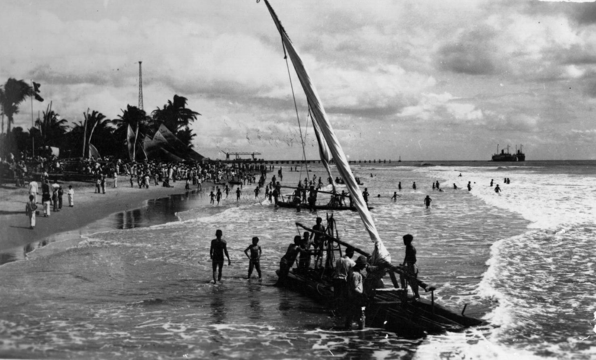
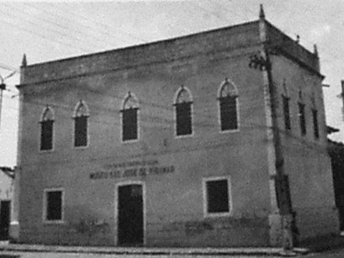

Veja fatos historicos
Praia de Iracema
Seu nome vem da personagem Iracema, que dá título ao romance Iracema, do escritor cearense José de Alencar...
Aquiraz
A então vila foi criada pela ordem régia de 13 de fevereiro de 1699, efetivamente instalada em 27 de junho de 1713...
Liberdade dos escravos

Abolição da Escravatura no Ceará No dia 25 de março comemoramos a Abolição da Escravatura no Ceará...
Inhamuns
Segundo os historiadores, os coronéis Francisco Alves Feitosa e Lourenço Alves Feitosa chegaram ao sertão dos Inhamuns por volta de 1710 e ali estruturam a maior comunidade rural da Capitania do Ceará...
Cangaceiros

O mais conhecido e temido da época foi o comandado por Lampiã também conhecido pelo apelido de “Rei do Cangaço”...
Politica

A primeira legislatura ocorreu entre os anos de 1835 a 1837 e era composta por 28 deputados.De acordo com o art. 4º da Constituição Política do Estado do Ceará de 1891, promulgada em 16 de junho de 1891...
Cultura
Quando da introdução da cultura portuguesa no Ceará, ao longo do século XVII, os índios já produziam um diversificado artesanato a partir de vegetais como o cipó e a carnaúba...
Lampiã
O mais conhecido e temido da época foi o comandado por Lampiã também conhecido pelo apelido de “Rei do Cangaço”...
Iracema
Seu nome vem da personagem Iracema, que dá título ao romance Iracema, do escritor cearense José de Alencar...